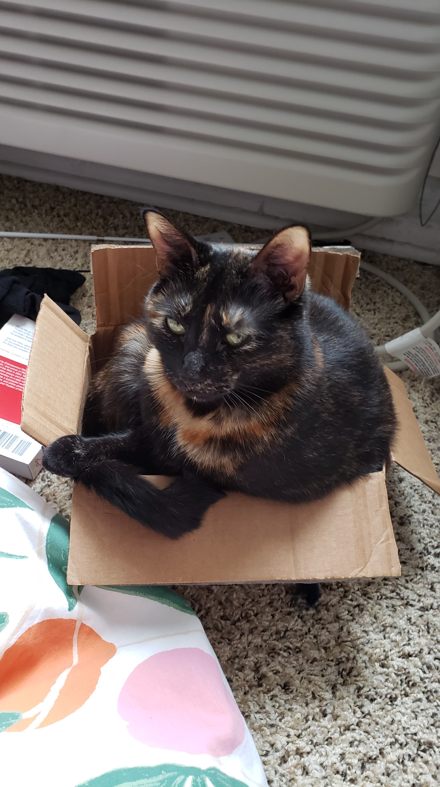

I feel much better today. I'm writing this in the morning and I'll finish it up at the end of the day. Waking up early and energized and eating a healthy breakfast has done wonders to clear my mind.
But before I can get to work, the events at the US Capitol yesterday are weighing on my mind. We saw a group of insurrectionists convinced that they are doing the right thing, tricked by the lies of a demagogue threaten democracy. If the US's current semi-autocratic form of democracy cannot withstand misinformation campaigns the what hope can I have for the implementation of my ideal political system, microvoting and participatory budgeting? If tax dollars are divided evenly between every citizen for them to assign to the task that they think is best (or to assign to any of hundreds of political parties to choose for them), it would bring true power for the people. A respite from the control that societal elites hold over budgeting. But, it also might be easy for a Trumpian figure aided by his cronies to trick a large group of people into assigning their money to corrupt causes. These are the members of society that were overlooked by the elite, but they had no one to turn to but a serial liar and that lead to this. Maybe this is a problem that is caused by the winner takes all system. You either choose those who ignore you or you choose the insane man. If you offered more choices, people may be less extreme. There would still be a small group of people that choose completely racist and unproductive policies, but they would return to the fringe. It is a concern that should be seriously addressed and I think the court system should be able to prevent funds from being assigned to activities that are too asinine, but I believe that most people who were tricked by Trump were doing so because they had no other option. Microvoting provides another option.
As for what to do now. I'd be in favor of another impeachment or invoking the 25th amendment. This president lied and it lead to a complete embarrassment of American democracy. Though, if I were to guess, it probably won't happen congress won't be able to impeach in 13 days and I don't think it's politically advantageous for Pence to invoke the 25th amendment, but I will be pleasantly surprised if anything happens.
Anyway, here's Licky in a tiny box:
It's now the evening, and I feel much better about today. Making a schedule worked and I stuck to it for the most part. I did more work on the chat app, and we're still not ready for a full deploy, but I fixed the huge bug that prevented users from logging in at the same time. I also provided quite a few UI improvements. But I am increasingly cognizant that I just need to get this application online. I don't want to release it with glitches but I also need to release it soon. I can't keep stringing the alpha testers along. The sooner I release it the sooner I know if it's a good approach for growing Solid. If it isn't, then I can change my focus to something else.
Outside of work, I've been looking for free furniture on nextdoor for our new apartment in New York. So far we found two beds and a couch, but we still need some desks and chairs. The plan is to drive around in a UHaul to pick up everything on Saturday when we fly into New York.
Finally, I ended the day with the "Relax" activity. We plunged back into my list on Netflix and watched "The Platform." Ailin did NOT like it, but couldn't stop watching hahaha. I thought the premise was interesting, if not a little heavy handed in its analogy to hierarchical societies. Though I thought the analogy fell apart in the third act.
Tomorrow's a big day, so here's the plan: